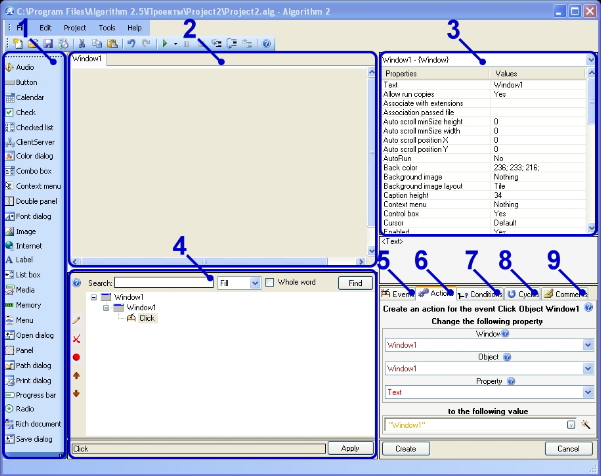

Development environment is an application window, divided into several parts. Each part is
designed for a particular development stage (graphical interface designing, objects customizing, coding).
Scheme of the environment :

 | 1 - Objects panel | Objects panel is designed for creating main functional elements of the program -
Objects (buttons, labels, windows).
|
 | 2 - Window panel | Window is a panel where you project graphic design of your program by placing different objects in the area of the window panel (buttons, text boxes, tables).
|
| 3 - Properties panel | Properties panel helps to set all necessary properties of main elements - objects (buttons, labels, windows).
|
 | 4 - Actions tree |
In the Actions tree all software contents of you program are created. All
objects,
events,
actions,
conditions,
cycles,
comments
are contained there.
|
 | 5 - Events tab | Events are actions performed by the user (clicking, cursor movement, etc.) which are connected with
objects (buttons, labels, windows). In Events panel you can assign objects those events which should be detected in the process of program work.
|
 | 6 - Actions tab | Actions are commands
(change a text of the window,
change button color)
executed by the program and programmed by you.
|
| 7 - Conditions tab | Conditions make it possible to specify whether the action should be executed at the moment or not.
Condition is a kind of rule, it is usually a comparison (e.g.
the text of the window is equal to "Window1"
or the button width is more than 100) and all
actions
created in the framework of this condition are executed
only when the condition is true (i.e.
the text of the window is actually equal to "Window1"
and the button width is more than 100)
|
 | 8 - Cycles tab | Cycles are same conditions except for that
all actions inside of cycles are being executed constantly,
until the condition is false (e.g. until the
height of the window is less than 100)
|
| 9 - Comments tab | Comments are your explanatory notes in the
Actions tree. They execute nothing and you can use them
to note something for clarity's sake.
|
The program you are creating can be easily run and tested at any stage of the process. To run it select menu items Project -> Run. While running the project you can debug it: pause, flag checkpoints and so on. See more details in the section Project debugging
When the program is ready you can create *.exe-file of your program which could be run irrespective of the Algorithm development environment. To generate it select File -> Compile Executable. The generated file is your own program and you can do with it whatever you want: share with friends, sell, distribute freeware on the Internet.


 Collapse all
Collapse all Description
Description